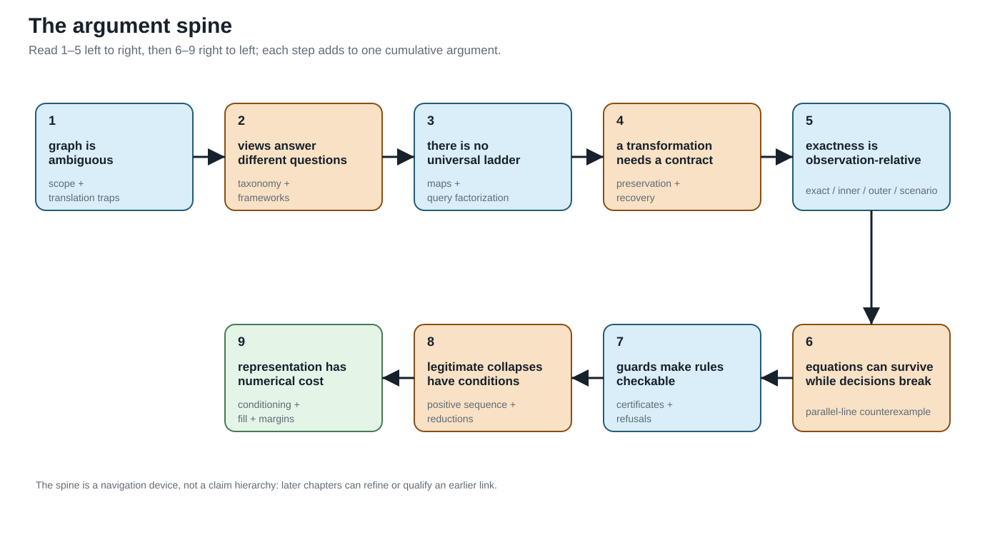
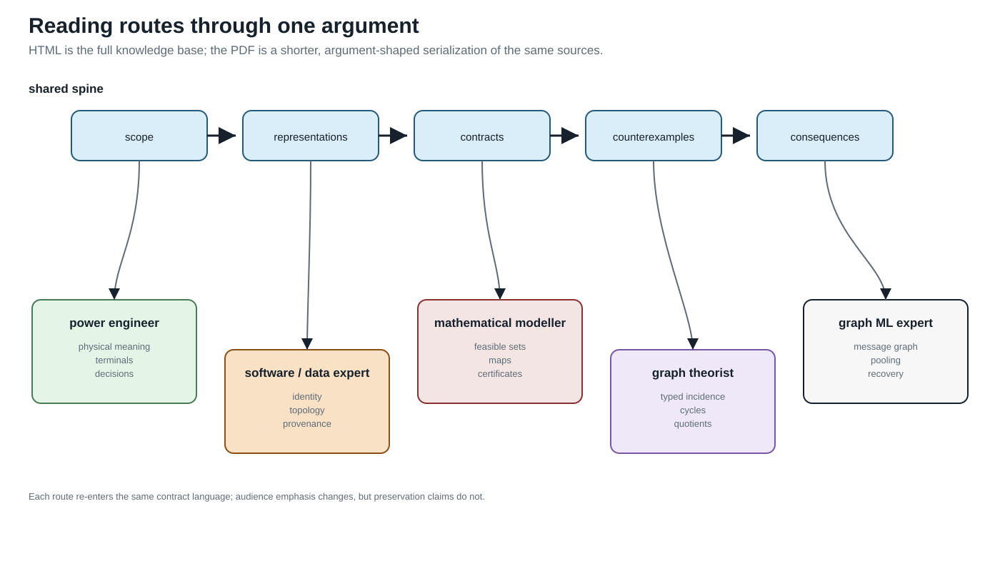

What Power-Network Models Preserve
Page status: reader-facing overview and navigation map.
Read the searchable HTML book here, or download the long-form PDF for the argument-shaped monograph.
Graphs, reductions, and decision boundaries
This book starts with a failure mode: a familiar power-network representation can remain numerically plausible while silently discarding the identity, grounding, limits, controls, decisions, measurements, or provenance needed by the study. The question is therefore not “which graph is correct?” but:
What does this representation preserve for this observation, constraint, or decision—and what does it forget?
The general multiconductor model is the baseline for making that question visible: explicit terminals and neutral/grounding, coupled line factors, switching states, multiwinding transformers, limits, controls, and recoverable decisions. Balanced transmission models are derived specializations, not the starting ontology.
The central thesis is:
A graph transformation is meaningful only relative to declared observations, constraints, and decisions. Simpler graphs should be derived, traceable views with preservation and recovery contracts.

Read the numbered spine from 1 to 5 across the first row, then continue down to 6 and follow the second row from right to left through 9. The arrows show reading order, not logical implication or a hierarchy of claims.
The argument route
Follow How to use this book for the full route. If you want to ask questions through ChatGPT, start with Use this resource with ChatGPT, which documents the supported reader and developer access paths. The companion page Use this resource with Claude documents the same paths for Claude, including the Model Context Protocol route into this repository. The compact argument is One network, many graphs → A first failure: heterogeneous parallel branches → Scope and thesis → Formal representation frameworks → From source data to a canonical network model → When the general model collapses → Translation traps → Preservation contracts → Transformation semantics and register → the guarded transformations and worked decision cases.
For the complete retrieval surface, use the generated knowledge-base index, which lists claims, artifacts, chapters, open items, and their evidence. The generated cross-community vocabulary indexes translate in both directions between familiar community phrases and the book's maintained terms. The chapter-status table records the scope and verification boundary of each page.
The long-form PDF is the argument-shaped monograph. The HTML route is both that argument and the exhaustive knowledge base: use its generated indexes when the question is retrieval rather than sequence.

The audience map is a route selector, not another taxonomy. Power engineers, software and data experts, mathematical modellers, graph theorists, and graph machine-learning experts enter through different questions, but every route returns to the same preservation-contract and evidence language.
What to read by question
- I recognize the words but not their use here. Read One network, five languages, then use the maintained Terminology page for compact definitions or the cross-community vocabulary indexes for bidirectional lookup.
- I know simple graphs or balanced transmission models. Start with the graph and transmission reading guide, then follow the route for your background into the shared four-wire and preservation examples.
- Which graph is this? Read Representation frameworks, Representation taxonomy, and Maps between representation frameworks.
- What does an arrow, cycle, parallel line, or radial feeder mean? Read Translation traps, Orientation, terminal quantities, and power transfer, and Cycles, parallelism, and radial structure.
- How did this graph get made? Read From source data to a canonical network model, then From conductor geometry to impedance fidelity.
- Why is a Y-bus not always enough? Read Circuit formulations and the lowering boundary, then Two topology levels and the nodal projection.
- Why can the same graph produce different decisions? Read Load models and decision dependence, followed by the parallel-line decision cases.
- Can I reduce or compile a model? Read Preservation contracts, Projection, compilation, and reduction, and
Kron, Ward, and optimized network equivalents, then follow the four-wire impedance-model ladder.
- What does a transformation preserve, and what does it erase? Read Transformation semantics and register, then Degree-two series elimination and BIM/BFM parallel lines: an expressiveness audit.
- What survives a decision problem? Read the parallel-line cases, the transformer-tap case, Certificate schema and composition, and Guarded normalization rules.
- What changes numerically? Read Numerical consequences of representation and reduction.
Scope and conventions
The book uses the BMOPFTools-style index discipline: $\ell ij$ denotes the stored reference orientation and terminal order for line $\ell$; it does not assert the operating direction of power. An element-intrinsic impedance is $\mathbf Z_\ell$. Multiwinding devices retain device and winding indices until an explicit compilation creates two-terminal arcs.
The target is stronger than matching voltages. A valid transformation may need to preserve or map conductor and winding limits, continuous and discrete controls, switching and outage choices, feasible sets, objectives, active constraints, eliminated quantities, and source provenance.
The current text is a research draft. Claims, generated witnesses, citations, and unresolved boundaries are tracked explicitly in the generated indexes.